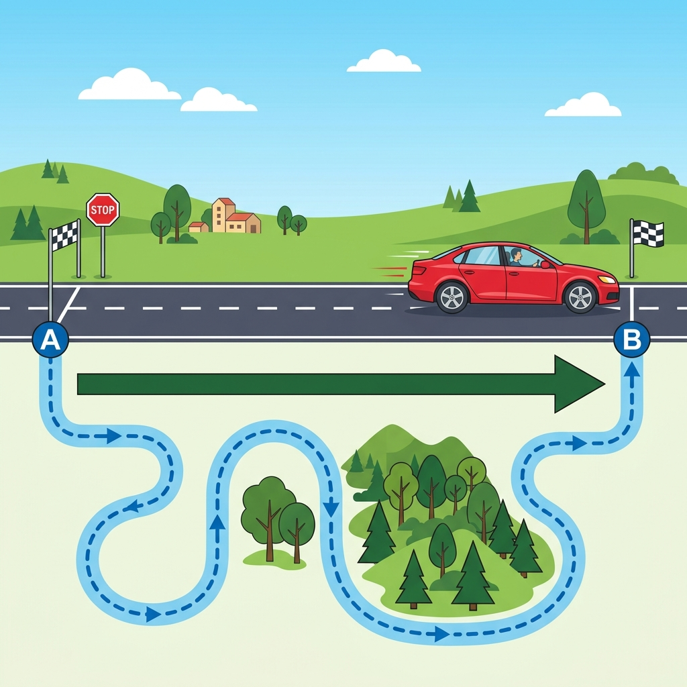

Vardaan Learning Institute
Class 9 Science • Chapter Notes
🌐 vardaanlearning.com
📞 9508841336
DESCRIBING MOTION AROUND US
Everything in nature is in motion, from massive astronomical objects to subatomic particles. To study these complex phenomena, scientists study them in idealised, simplified forms: linear, circular, and oscillatory.

Illustration representing linear motion and displacement vs distance
1. Motion in a Straight Line
When an object moves along a straight path, it is called linear motion. It is the simplest kind of motion.
1.1 Describing Position
- To describe the position of an object, we specify a fixed point called the reference point (or origin 'O').
- An object is in motion if its position with respect to the reference point changes with time.
- An object is at rest if its position with respect to the reference point does not change.
- For straight-line motion, direction is indicated by plus (+) and minus (-) signs relative to the origin.
1.2 Distance Travelled and Displacement
Concept
Distance: The total path length covered by an object during a given time. It requires only a numerical value (magnitude) and no direction. It is a scalar quantity.
Displacement: The net change in position of an object. It is the shortest straight-line distance between the initial and final positions. It requires both magnitude and direction. It is a vector quantity.
- The SI unit for both distance and displacement is the metre (m).
- Displacement can be zero (if the object returns to its starting point), but total distance travelled is never zero for a moving object.
- The magnitude of displacement is always less than or equal to the total distance travelled.
1.3 Average Speed and Average Velocity
- Average Speed: The total distance travelled divided by the total time interval. It indicates how fast the object is moving.
$$ \text{Average Speed} = \frac{\text{Total Distance}}{\text{Time Interval}} $$
- Average Velocity: The change in position (displacement) divided by the time interval. It indicates how fast the position is changing and in which direction.
$$ \text{Average Velocity } (v_{av}) = \frac{\text{Displacement}}{\text{Time Interval}} $$
- Uniform Motion: If an object travels equal distances in equal intervals of time, it moves at a constant speed.
- Non-Uniform Motion: If an object travels unequal distances in equal intervals of time, its speed is changing.
Units
The SI unit of both average speed and average velocity is metre per second ($\text{m s}^{-1}$ or $\text{m/s}$).
1.4 Average Acceleration
Acceleration is the rate of change of velocity. A change in velocity can be a change in magnitude (speeding up or slowing down), a change in direction, or both.
- $$ \text{Average Acceleration } (a) = \frac{\text{Change in Velocity}}{\text{Time Interval}} = \frac{v - u}{t} $$
- The SI unit of average acceleration is $\text{m s}^{-2}$.
- When the magnitude of velocity increases, acceleration is in the direction of velocity. When it decreases (braking), acceleration is opposite to velocity (sometimes called deceleration or retardation).
2. Graphical Representation of Motion
2.1 Position-Time Graphs
- Time is plotted on the X-axis, and position on the Y-axis.
- A straight line parallel to the time axis indicates the object is at rest (stationary).
- A straight inclined line indicates uniform motion (constant velocity).
- A curved line indicates non-uniform motion (accelerated motion).
- Slope: The steepness (slope) of a position-time graph gives the velocity.
2.2 Velocity-Time Graphs
- Time is plotted on the X-axis, and velocity on the Y-axis.
- A straight line parallel to the X-axis means velocity is constant (acceleration is zero).
- A straight inclined line means velocity is increasing or decreasing uniformly (constant acceleration).
- Slope: The slope of a velocity-time graph gives the acceleration.
- Area: The area enclosed by the velocity-time graph and the time axis gives the displacement.
3. Kinematic Equations for Constant Acceleration
For an object moving in a straight line with constant acceleration, the following equations connect initial velocity ($u$), final velocity ($v$), acceleration ($a$), time ($t$), and displacement ($s$):
Formulae
- Velocity-Time Relation:
$$ v = u + at $$
- Position-Time Relation:
$$ s = ut + \frac{1}{2}at^2 $$
- Position-Velocity Relation:
$$ v^2 = u^2 + 2as $$
These are known as the kinematic equations.
4. Motion in a Plane
Motion in two dimensions, like a vehicle turning or a satellite orbiting, is motion in a plane.
4.1 Uniform Circular Motion
- When an object moves in a circular path with constant speed, its motion is called uniform circular motion.
- Even though speed is constant, the direction of velocity continuously changes. Because velocity is changing, circular motion is an accelerated motion.
- The velocity at any point on the circle is directed along the tangent to the circle at that point.
- If an object completes one revolution of a circle of radius $R$ in time $T$, its average speed is:
$$ v_{av} = \frac{2\pi R}{T} $$